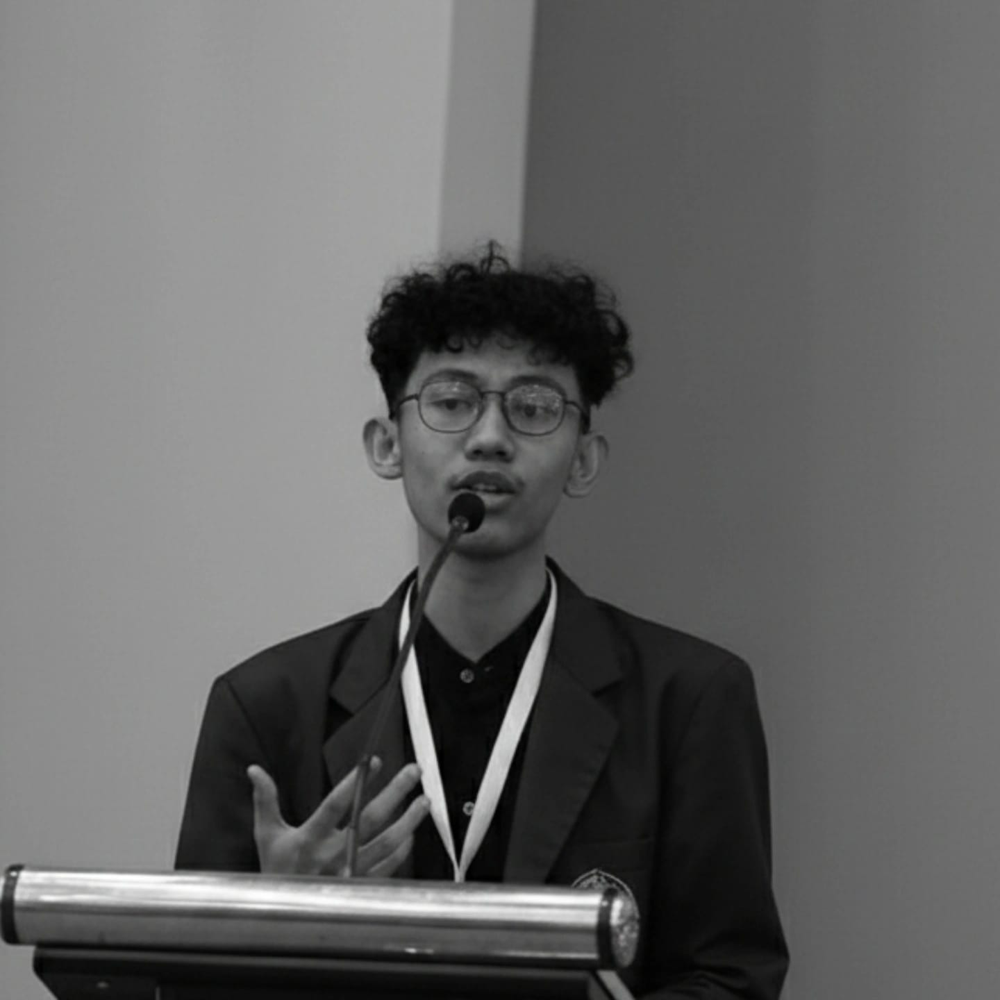

Hananta Angger Yuga Prawira
About Me
Economics graduate from Universitas Diponegoro with a strong foundation in quantitative research, data management, and policy-oriented analysis[cite: 1]. Experienced in compiling, cleaning, and evaluating large-scale macro datasets utilizing R, Stata, and spatial econometrics modeling[cite: 1, 3]. Passionate about regional development, public policy, and evidence-based decision-making[cite: 1].
Education
Bachelor of Economics (S.E.)
Regional Economics, Universitas Diponegoro[cite: 1]
Best Graduate (182nd Period) • GPA 3.76/4.00[cite: 2]
Undergraduate Thesis
"Spatial Heterogeneity and Spillover Effects of Food Security in Eastern Indonesia"[cite: 1]
Methodology: GWPR & Spatial Durbin Model
Campus Activity & Leadership
Organizational leadership, field reconnaissance, and academic community engagement.

Head of Academic & Research Division - DESC
Led academic initiatives promoting economic literacy and policy discussions, supervising a team of 7 staff members in executing flagship programs[cite: 2].

Blue Growth & Blue Justice - Pekalongan Coast
Conducted field reconnaissance and livelihood surveys assessing coastal welfare and socio-economic conditions of fishermen communities along the Pekalongan regency coastline.

Seed Farmers Welfare Analysis - Bandungan, Semarang
Performed direct field interviews and household surveys to analyze the socio-economic welfare and operational dynamics of agricultural seed farmers in Bandungan.

Junior Staff of Academic Division - KESMES
Coordinated academic programming for seminars and national essay competitions involving more than 200 participants[cite: 2].

Division Coordinator - Provel (Econolympics)
Designed competition rules, grading rubrics, and formulated academic exam instruments for the High School Economics Olympiad.
Research, Fieldwork & Data Projects
Comprehensive portfolio of quantitative research, data engineering, and analytics dashboards.

Macro Dataset Integration & Spatial Analysis
Compiled, cleaned, and integrated multi-source datasets covering 185 regencies and cities in Eastern Indonesia using PODES and spatial indicators[cite: 1].

Green Economy Efficiency across East Java
Led a student research team evaluating green economy performance using Slack-Based Measure Data Envelopment Analysis (SBM-DEA) and spatial econometric techniques[cite: 1].

Regional Head Scraping Pipeline
Engineered an automated Python web scraping and data cleaning pipeline to extract and structure large-scale historical political and socioeconomic records.

BPJS Healthcare Longitudinal Dashboard
Cleaned, structured, and managed a five-year longitudinal BPJS sample dataset, supporting disease trend forecasting using Prophet time-series models[cite: 1].
Internship & Professional Experience
Institutional policy review, governance exposure, and academic mentoring roles.

Commission A - DPRD Central Java Province
Assisted in reviewing the Regional Medium-Term Development Plan (RPJMD), observed executive-legislative consultations, and drafted policy briefs[cite: 1].

Multivariate Analysis & Quantitative Methods
Assisted instruction through laboratory sessions, developed practical econometrics modules using R, and guided students in quantitative data output interpretation[cite: 1].